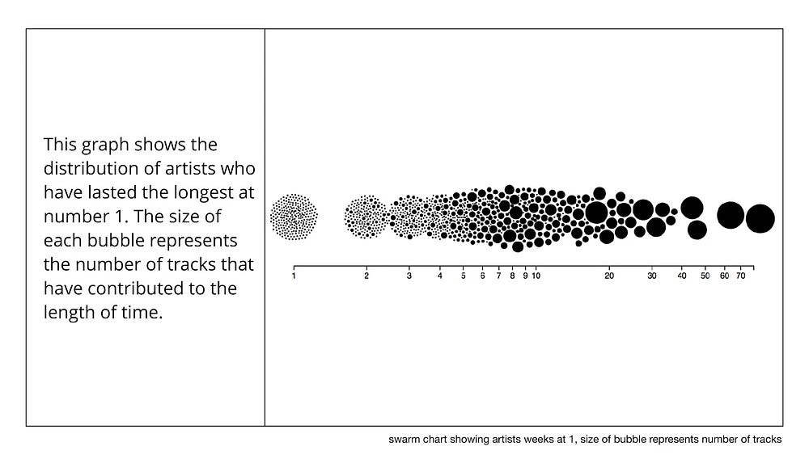
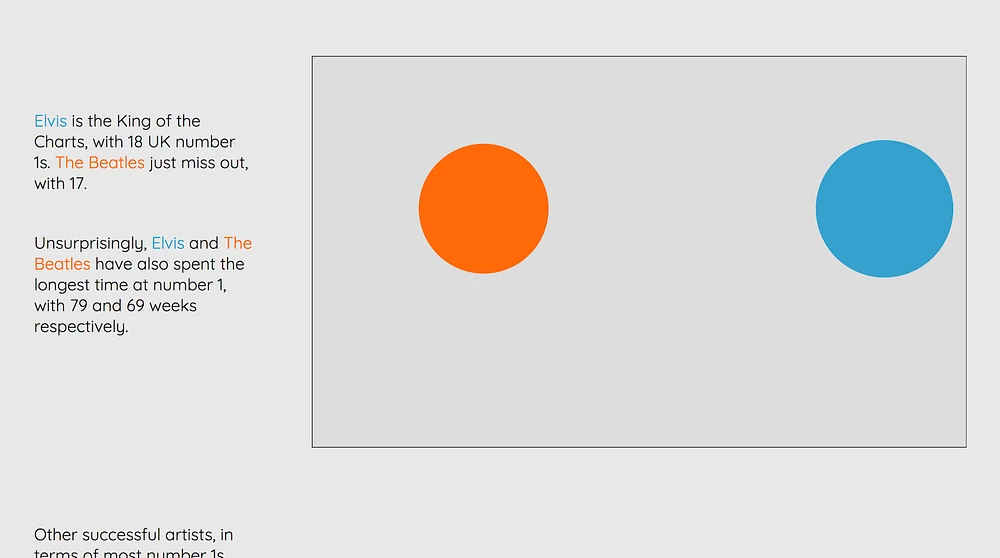
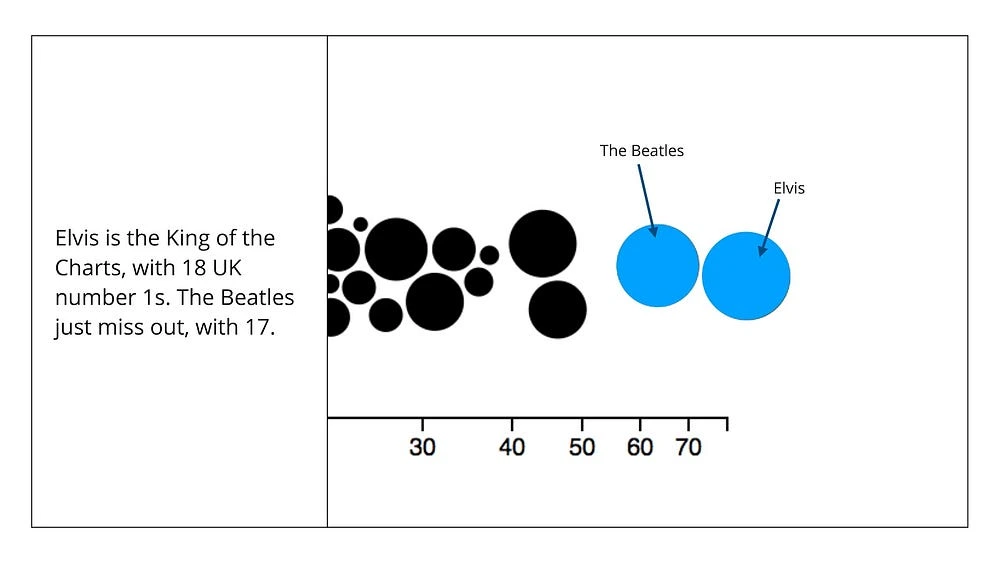
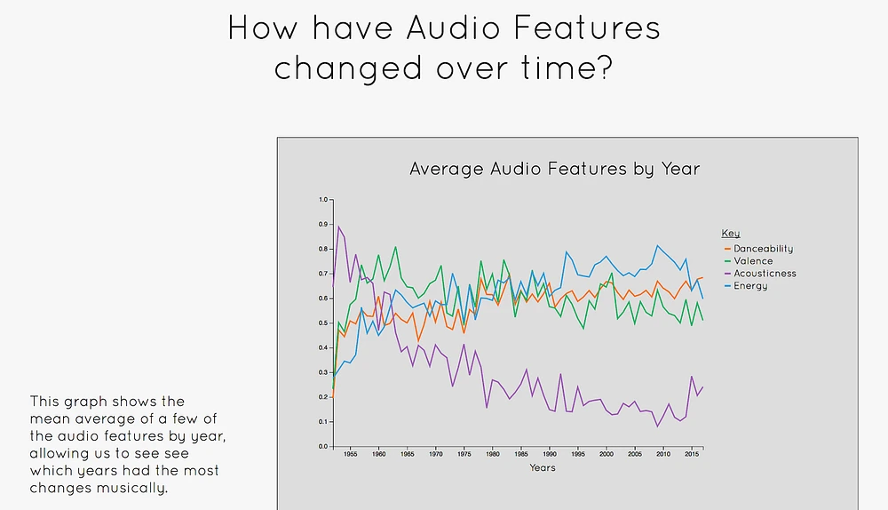
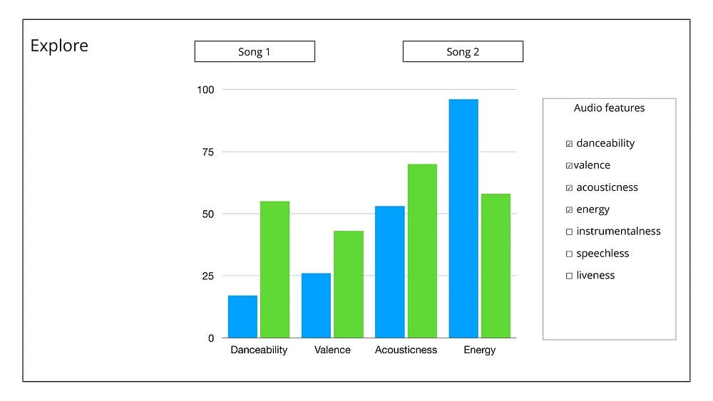
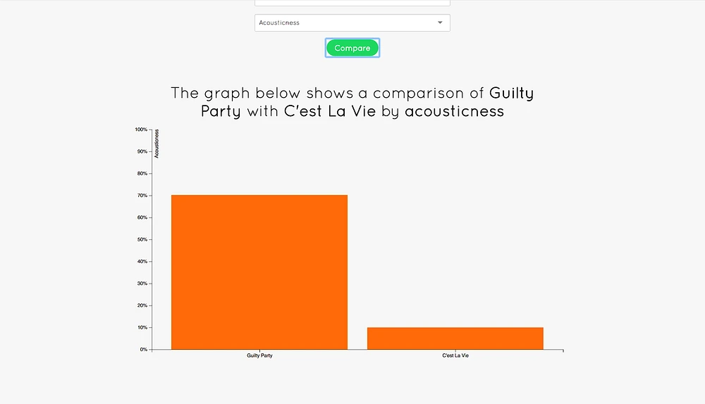

FINAL-YEAR PROJECT · DATA STORYTELLING
A visual analysis of UK number 1s
Did you know that Grammy award-winning singer, Adele, has the same number of Number 1 Singles as children’s cartoon character Bob the Builder?* I didn’t, until I undertook an analysis of the UK chart history for my final year university project.
*(At least until 2021!)
Making my own interactive story
On placement with BBC Visual Journalism, I’d seen what went into making an interactive story. For my final-year project, I wanted to try the whole thing myself, from finding the data to deciding what story to tell with it.
Spotify produces quantitative data for every song in their library on characteristics such as ‘danceability’, ‘valence’ and ‘energy’. This data is effectively meaningless in isolation and presented as a list of numerical values. I decided to contextualise some of this data by analysing songs which have reached number 1 in the UK charts, and comparing attributes based on when they were number 1, or how long they were number 1 for. I scraped the Official Charts records with Python and Beautiful Soup, then matched the singles against the Spotify API.
Getting the data right
I’d already started looking for patterns when I turned the matches into a Spotify playlist. That’s when I spotted more than 50 karaoke versions, plus covers and other mismatches. A karaoke version could make a chart hit look far more instrumental than it really was.
I rewrote the matching script in Node.js to query Spotify’s title and artist fields separately. I corrected chart metadata and checked for duplicate track IDs and missing audio features. I kept unmatched singles in the chart history and left them out of the audio comparisons.
Showing readers where to look
The BBC data journalism team gave me a quick introduction to R over lunch. I really enjoyed diving into the data, pulling bits out and calculating if they were statistically significant. Once I’d found enough material for the story, I wrote the findings on cue cards so I could move them around and see what belonged together.
I used Keynote to mock up what readers would see at each scroll step. In the first chart, position highlighted artists' total weeks at number one and bubble size showed how many singles got the artist there. The cluster at one week drew the eye first. With no labels on the bubbles, it was hard to find the artists I was talking about.

I wanted readers to see the full distribution and still be able to pick out the artists I was discussing. My first version matched the colour of each artist’s name in the text to their bubble. I wanted readers to make that connection at a glance, so I kept the overview and added annotations that pointed to each artist by name. As readers scrolled, Scrollama triggered the changes and D3 updated the chart. After the guided part, readers could pan and zoom for themselves.


How did the sound of a number one change?
I wanted to know which year had the most danceable number ones, according to Spotify. My first line chart connected individual song scores, so several points could land in the same year. It was a mess. Once I averaged the scores by year, 1983 came out on top in my dataset. The line chart let readers see that peak in context alongside the trends for valence, acousticness and energy.

Comparing songs by ear and by data
I used searchable dropdowns for readers to find songs among more than 1,300 UK number ones. They could compare two chart hits or sign in to Spotify to compare a hit with one of their most-played tracks. I quickly mocked up a chart to get a sense of what it would look like to compare several audio features at once.

The grouped bars were trickier to build than I expected. I tried a few approaches but, as time was limited, I opted to simplify and used two bars in the finished version, with a dropdown to switch between features. Readers could compare the scores for acousticness, for example, then listen to the previews and see if the difference made sense to them.

What testing turned up
I used Selenium and Cucumber to scroll through the story and check that the charts zoomed to the right view and displayed the right labels. The tests helped me spot that revisiting a step could create duplicate SVG elements with the same ID. I changed the code to reuse the existing label if it stayed in place and replace it if it moved, so scrolling back and forth didn’t keep adding elements to the page.
On a first visit in my WebPageTest run, the swarm chart’s artist images accounted for most of the 800-plus requests, and the page took almost 20 seconds to finish loading. The document itself loaded in under 1.5 seconds and the page was interactive in under four, so readers could start exploring while the remaining assets loaded.
Colour vision simulations showed that the line chart was harder to read with all seven series visible.
From final-year project to BBC News
I received 94% for the project and won the 2018 Wired Sussex prize for Best Final Year Digital Project.
I took what I’d learned about building charts that respond to scrolling into Falling through the pay gap, where I led development of a BBC story that animated more than 10,000 company data points.
What I’d change today
I’d rethink how the text and charts fit together on a phone and change the chart layout where shrinking it would make it harder to read. I’d also add visible, keyboard-accessible controls for stepping through the story and exploring the charts, plus descriptions for screen-reader users.
I’d load artist images as readers reached the swarm chart and add direct labels to help tell the lines apart. There’s also more I’d like to explore in the dataset. I’d turn the chart and storytelling code into reusable templates so I could build a series around those questions.
Project and write-ups
I wrote about this process in a lot more depth on Medium, doing a deep dive into each part of the process: